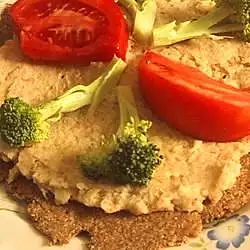

Fava Beans

Description:
Fava Beans is one of the most popular dishes in Sudan.
They're high in protein and other important nutrients.
Eating fava beans can help with weight loss, aid in your body's
immunity, and provide other health benefits.
Ingredients:
- 1 tablespoon olive oil
- 1 medium onion, chopped
- 1 (15 ounce) can fava beans, drained
- 1 lemon, juiced
- ⅓ cup tahini
- 5 cloves garlic, crushed
- salt and pepper to taste
Steps:
- Heat olive oil in small to medium saucepan over medium-high
heat. Cook onion in oil until softened.
- Stir in the beans and lemon juice. Next, stir in the tahini
until mixture is thick. Then, add the garlic, and cook for a
few minutes more. Season to taste with salt and pepper.
Return to top
Return to main page